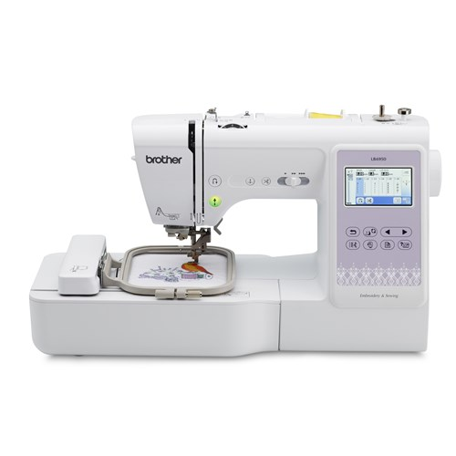

Exercice 1
Exercice 4
Machine a coudre

Description
Brother LB6950 Machine à coudre, à courtepointe et à broder
N° modèle:LB6950
La machine à coudre, à courtepointe et à broder LB6950 de Brother est munie d'un écran tactile ACL couleur de 3,7 po, pour prévisualiser et modifier vos motifs avant de les coudre. Les fonctions élargies d'édition de motifs de broderie vous permettent de changer la ... Voir la description complète du produit